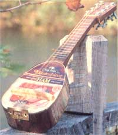
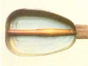
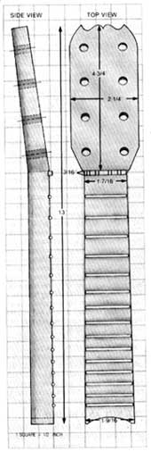

Build Your Own Hamdolin
By Wayne Erbsen
January/February 1985
It's amazing what you can do with an open mind and a ham can. Wahy, you might even...
Before I explain the particulars on how you can build your very own playable, attractive, almost-one-of-a-kind mandolin out of a ham can (I call it a hamdolin, naturally), I'd like to tell you how I came to tackle such an unlikely project in the first place.
Five or six years ago, I was rooting around in a wrecking yard near my home, searching amidst a sea of abandoned cars for an exhaust manifold for my old Dodge van. Call it fate (or just outright compulsive curiosity), but for some reason I happened to peer through the window of an old truck, and I spotted two empty ham cans sitting peacefully on the seat.
Well, right off, those pear-shaped tins reminded me of mandolins (we musicians tend to see music in almost everything), and that got me to thinking about the banjo-like instrument I'd once made out of a plastic milk jug, and that got me to cogitating on the possibilities presented by the pair of lonely-looking castoffs on the seat of the truck. Hmmmmm . . .
I left the junkyard that day with an exhaust manifold . . . and two adopted ham cans.
Of course, inspiration is one thing, and motivation is another. Since the manifold meant mobility, I installed it right away. But I only recently, as a result of an unanticipated burst of energy, picked up one of the containers I'd rescued, brushed at least five years' worth of dust off it, and decided maybe it was time to make a mandolin.
Not being one to do things the easy way (which in this case would've been to walk into a store and buy a mandolin, or at least the parts for one), I also figured I'd saddle myself with a small handicap. I'd do this thing strictly on the cheap, and I'd stick to a design that anybody with some ingenuity, a ham can, and access to a hardware store could more or less duplicate. I wouldn't spoil my concept by relying on fancy woodworking tools, either. I'd make do with whatever humble implements I had on hand.
In other words, I didn't build my hamdolin so much as I improvised it. That's why, instead of giving you step-by-step instructions for this project, I'm just going to tell you how I put mine together, to give you the general drift of the way it was constructed. Then you can let your own ideas run wild, based on whatever tools and materials you have. This is in the finest tradition of hamdolin makers everywhere. What we lack in tangible resources, we make up for in wit, cunning, and a sense of the charming absurdity of our art.
Ready? Here goes.
THE BODY
Obviously, the ham can saved me the work of building a body for the instrument. When it came to choosing which can to use for my hamdolin, I selected the three-pound-size Wilson Masterpiece brand, which appealed to me because the name was close enough to Gibson Mastertone (a classic mandolin) to invite comparison. My choice had other alluring attributes, too: Cooking directions were printed on the side, so while I practiced I could read how to bake, glaze, broil, skillet-grill, and barbecue. It was nice to know, too, that my instrument would be "boneless and fully cooked," and that satisfaction was guaranteed. And I figured I wouldn't have to worry about anyone walking up to me, pointing at my instrument, and asking, "What's that," since the can is clearly labeled and even carries its original price sticker. There is beauty in the unambiguity of an instrument made from a ham can.
THE NECK
I knew that making the neck (or "hamdle") would be tricky: It'd have to be well shaped and smooth for easy playing, with frets placed accurately to produce true scales and with tuning pegs that were both inexpensive and precise.
At first, I considered using a piece of pine 2 X 4 for the neck, but decided that the wood wouldn't hold up to the pressure of eight taut steel strings. Then I spied a big old block of black walnut, about 18" square, which had been lying around for untold years. All I had to do, I assured myself, was cut away at that ponderous chunk until I'd removed everything that didn't look like a mandolin neck. No problem ... or so I thought until I took another look at my meager store of tools.
I tried using my trusty circular saw to slice the block down to size, but the blade was dull, as usual, and the cut it made was too shallow to make much difference anyhow. I resisted using my chain saw, for fear of ruining my masterpiece (or perhaps myself). The only solution, I concluded, was to resort to the subtle persuasive power of my splitting maul and wedge. I laid the walnut on my chopping block and proceeded to hack away at it, in much the same way, I fantasized, that Michelangelo started his sculptures in blocks of marble centuries ago.
Eventually, I whittled the block down to more manageable dimensions and clamped it to the sheet of plywood I call my workbench. I then rummaged around in my toolbox, extracted a hammer and a set of woodworking gouges, and-using a "real" mandolin as a guide-proceeded to chisel out the rough shape. I had to be careful to make the neck increasingly (but only slightly) wider from top to bottom ... to give it a flat fingerboard surface and a palm-pleasing rounded contour at the back . . . and to angle the peg head slightly down and away from the fretboard. So I worked slowly, taking only a few cuts at a time with the gouges before checking my progress for symmetry and general agreement with the real neck's design.
After hours of painstaking stop-and-go effort, I found myself with a huge pile of wood chips. . . and a pretty fair rough-hewn hamdolin neck. From there I pressed on, using various rasps, files, and-ultimately-sandpaper before finally declaring the piece finished. (The illustration shows the various dimensions of the resulting product.)
Next, after double-checking to be sure that the fretboard was reasonably flat, I laid out the positions of the frets by first measuring the distance from the nut (the piece the strings cross over just below the peg head) to each fret on my own mandolin. Then I used those measurements and a pencil and straightedge to mark the locations of the frets on the hamdolin neck, taking care to keep the lines square to the neck and parallel to one another.
For those of you who might not have a mandolin around to measure, here are the distances I used: Once I had the fingerboard laid out, I carefully cut across each mark with my carpenter's saw, to make shallow slots for the frets.

To make the frets themselves, I selected some six-penny finishing nails from my personal stash of hardware and cut them with a hacksaw (lopping both ends off each one, of course) to fit the fingerboard. Since the neck is relatively narrow at the top and widens gradually toward the bottom, I cut each nail to the exact width of its particular fret location. I also opened up the slots just a bit more with a fine file, so that the nails would be snugly cradled in them but remain raised about 1/16" above the fingerboard itself. Then I glued the frets in place with Super Glue. (I also tried using epoxy but discovered the stuff is somewhat messy to apply. If you do use epoxy, put some paste wax on the fingerboard-don't get it in the slots, though-to make it easier to chisel off any excess that slops over.)
Finally, after all the frets were in and I'd given the glue a chance to dry, I laid a straightedge across them to see if they were relatively level with one another. A few frets stuck up just a bit, so I filed the high spots down until they were all even, from the top of the fingerboard to the bottom, and from side to side.
TUNING PEGS
The temptation just to go buy some tuning pegs at a music store was mighty strong, but I stubbornly resisted and went it alone. After considerable thought and a little tinkering, I came up with a workable design and journeyed to the hardware store with my idea.
I returned with a bag full of nuts and bolts, and a receipt for the staggering amount of $2.40 . . . which, as it turned out, was the total price of my hamdolin (not including strings). When I opened the bag and spread the contents on the kitchen table, I had enough parts to construct eight pegs, each consisting of a 1/4" X 1-1/2" flathead bolt, a 1/4" hex nut, a 1/4" wing nut, and a small washer.
In my workshop, I drilled a 3/32" hole through each bolt, just below the head. (Be sure to keep plenty of oil on the area while you're drilling, or you'll burn out countless bits.) Then I laid out, marked, and bored eight 9/32" holes in the peg head to accommodate the bolts. I positioned each vertical row of four holes about 1/2" in from its respective side of the peg head, and spaced the cavities approximately 1-1/4" apart. (These measurements varied somewhat from one bolt to another, simply because the peg head itself isn't absolutely uniform.) One thing to keep in mind when shaping your hamdolin's peg head is to allow enough length to provide plenty of space between the pegs and thus enough room to turn the wing nuts. Remember, too, to make the peg head thick enough to be sturdy but thin enough to allow the bolts to extend through and well beyond the wood, leaving plenty of thread free for adjusting the strings.
Once I'd bored the peg head holes, I slipped a washer onto each of the bolts, put the fasteners through the peg head (front to back), and secured them loosely in place with the hex nuts. Then I glued a wing nut onto the very end of each bolt with epoxy, so that I could turn any peg to adjust a string merely by turning the wing nut. Simplicity itself!
THE NUT AND BRIDGE
I whittled the nut for my hamdolin from a piece of maple and cut four pairs of shallow grooves into it, to hold the strings in place. The distance from the outside fourth string slot to the outside first string slot is about 1-3/16" ... the distance between each pair about 1/4" ... and the two grooves within ich pair are about 1/16" apart. Then I ipped the nut into the notch I'd carved for between the bottom of the peg head and ie top of the fingerboard.
It's important to make this component tall enough so the strings will clear the first fret, but not so tall that you'll have trouble pushing the strings down on the frets. You may have to file the first fret down a bit, as I did, to make it all work.
With the nut finished, I went on to whitle a bridge (the part that fits between the body of the hamdolin and the strings; see the photos) from a 5-1/2"-wide scrap piece of oak. I found, though, that I couldn't tell how high to build the bridge until I strung the hamdolin. I originally made the bridge 1/2" tall, but ended up adding another piece beneath it-to increase the height to a total of 3/4"-when I discovered that the bridge didn't raise the strings sufficiently. Live and learn.
I also cut grooves in the bridge, just as I had in the nut, to hold the strings . . . but I used slightly wider spacings: 1-5/8" from the outside fourth string slot to the outside first string slot . . . 3/8" between each pair .. and 1/8" between the strings within pair.
ATTACHING THE NECK
Surprisingly, joining the neck to the ham can turned out to be a fairly simple task. First, carved the lower end of the neck to match the contour of the ham can's top. Then I rustled up an old wooden chair rung (a 1/2" or 5/8" dowel would do just fine) and cut it so that it was about 1" longer than the ham can measured from bottom to top.
Next, I drilled a hole the same diameter as the rung approximately 1" deep straight into the end of the neck, lengthwise, and cut a matching hole in the ham can where the two parts would meet. Then I put a little glue on one end of the rung, inserted that end through the hole in the can, and twisted it into the neck until the opposite end of the rung just reached the inside bottom of the can (see the photo). Finally, I drove a screw through the bottom of the ham can and into the rung, to hold it firmly in position.
When you attach the neck to the can, keep in mind that the angle of the two parts (as well as the height of the bridge and nut) will affect the height of your strings. Remember this factor when you drill the hole into the neck, and when you position the dowel before screwing it in place. The higher the strings, the harder the instrument will be to play.
THE TAILPIECE
In my first attempt at designing a good method of attaching the strings to the can, I simply drilled eight small holes in the bottom of the container, inserted eight screws, and slipped the loop ends of the strings over the screws. But the plan was a dismal failure. The ham can simply wasn't strong enough to hold the screws when I tightened the strings.
Remembering Thomas Edison, I dismissed this minor setback as an experience familiar to all great inventors and turned to a source of salvation that has seldom failed me: my miscellaneous-and-unidentified-parts-and-hardware-and-other-assorted-junk box. I reached in, pulled a chunk of metal out, and gasped in astonishment at what I instantly realized was the ideal hamdolin tailpiece: an old brass strike plate from a doorjamb, beautifully tarnished to give it the look of a vintage Gibson tailpiece from the 30's. I was in heaven.
To install it, I merely wrapped one end of a short piece of heavy wire through and around one of the plate's (two holes, attached the other end to the other hole in the same way, and-with the strike plate's tongue pointing toward the neck-hooked the middle of the wire over the screw that holds the dowel to the can. Then I looped the strings around and through the plate's slot, ran them over the bridge and along the fingerboard, and attached each one to its respective peg head. (A tip: Don't glue the bridge to the hamdolin's body, because you may need to move that piece one way or the other slightly to adjust the pitch of the strings. As a starting point, place the bridge so that its top edge-where the strings first make contact with it-is exactly 13" from the bottom edge of the nut. The tension of the tightened strings will hold the bridge in place.)
TUNING
Just to make sure the strings wouldn't slip, I poked each one through the hole in its peg and then stuck it through a second time before turning the wing nut. Once I had a string up to tension, I fastened its hex nut down with a 1/4" open end wrench, and then fine-tuned it by turning the wing nut. The pegs work like a charm; every once in a while I'll have to retighten a hex nut with the wrench to keep a peg from slipping, but most of the time I can tune my hamdolin just by adjusting the wing nuts. (For those of you who aren't familiar with the way a mandolin is tuned, here's a short course: The first pair of strings-the one closest to your knees when you hold the hamdolin on your lap-is tuned to E ... the second pair to A ... the third to D ... and the fourth to G. A violin pitch pipe is handy for tuning a mandolin. Also, remember that new strings stretch and get out of tune even on expensive mandolins, so if you're installing new strings, give them a chance to stretch before you fine-tune them.)
HAM IT UP!
In case you haven't guessed, I like my hamdolin. I may joke about it, but the fact is it makes a terrific little instrument for beginners and experienced players alike. Granted, it's not quite as perfectly designed or true-to-pitch as a real mandolin (yours may be more or less" so, depending on the time and care you put into making it). But it does have an unmistakable beauty all its own . . . and produces an impressively pleasing mandolin-like sound.
Anyway, I hope you'll give hamdolin making a try. I'll give you a quick course on playing a mandolin in the next issue of MOTHER. Meanwhile, any good book on the subject will get you started on your new instrument. I think you'll find that your hamdolin is especially good on such songs as "Ham Me Down My Walking Cane" and other old-time favorites like "Ham Sweet Ham."
In fact, after you've practiced awhile, you can get together with other hamdolinists and form a "pork-estra."
Wouldn't that be a lard of fun? Good luck, and keep picking!
EDITOR'S NOTE: Wayne Erbsen is director of the Appalachian Music Program at Warren Wilson College in Swannanoa, North Carolina. Mr. Erbsen is also the author of a number of books on playing various instruments and types of music: Clawhammer Banjo for the Complete Ignoramus! ($6.95), Starting Bluegrass Banjo From Scratch ($7.95), The Complete & Painless Guide to the Guitar ($6.95), The Backpocket Bluegrass Songbook ($3.95), and The Backpocket Old-Time Songbook ($3.95). All are available for the cover price, plus $1.00 postage per order, from Wayne Erbsen, 825 Bee Tree Rd., Swannanoa, NC 28778.
|
 STAFF PHOTOS ""There is beauty in the unambiguity of an instrument made from a ham can,"" says the author. Note the tailpiece, made from a brass strike plate. |
 A chair rung joins the body to the neck. |
 Tuning pegs are made of nuts, bolts, and wing nuts. |
|
|
 |
|